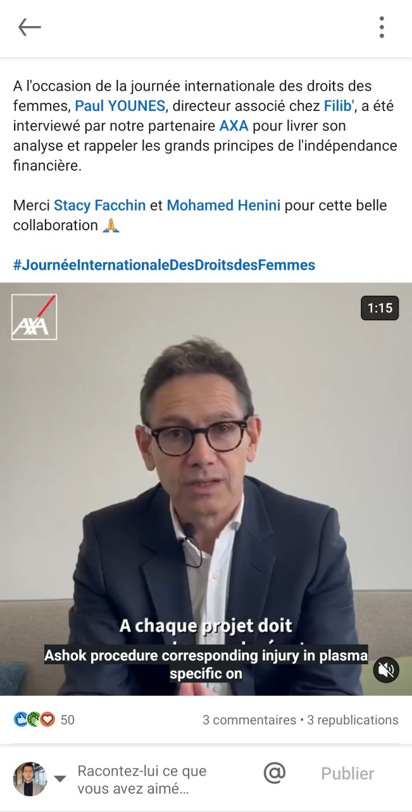

Dans le cadre de mon stage chez AXA, j'ai eu l'opportunité de travailler sur plusieurs projets de production vidéo. Parmi eux, j'ai été en charge de l'écriture, du tournage et du montage de la saga "On en parle", publiée sur le compte Tiktok de AXA France. Pour ce faire, j'ai utilisé des logiciels professionnels tels que Premier Pro et Capcut Pro.
Dans le cadre de mes missions chez AXA, j'ai également eu la responsabilité de réaliser une interview avec Paul Younès, directeur associé chez Filib, sur le thème de l'épargne. Cette vidéo a été produite en utilisant les logiciels PlayPlay et Premier Pro,pour garantir une qualité de production optimale. 
Dans le cadre de mes missions chez AXA, j'ai également participé à la production de vidéos pour la campagne "Face Cam" du Psychodon. Dans ce contexte, j'ai réalisé une interview avec des collaborateurs d'AXA, mettant en avant leur implication et leur engagement. J'ai utilisé le logiciel PlayPlay.
Enfin, dans le cadre de mon stage chez AXA, j'ai travaillé sur la réalisation d'une autre vidéo pour la saga "Face Cam", cette fois-ci en collaboration avec l'ASSOSPS. L'objectif était de faire connaître cette association, et de diversifier le contenu Twitter de AXA, en mettant en avant l'engagement de ses collaborateurs.